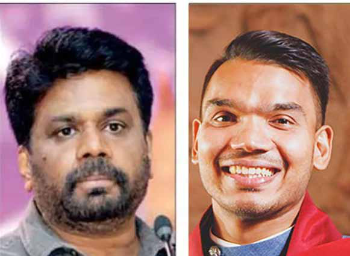
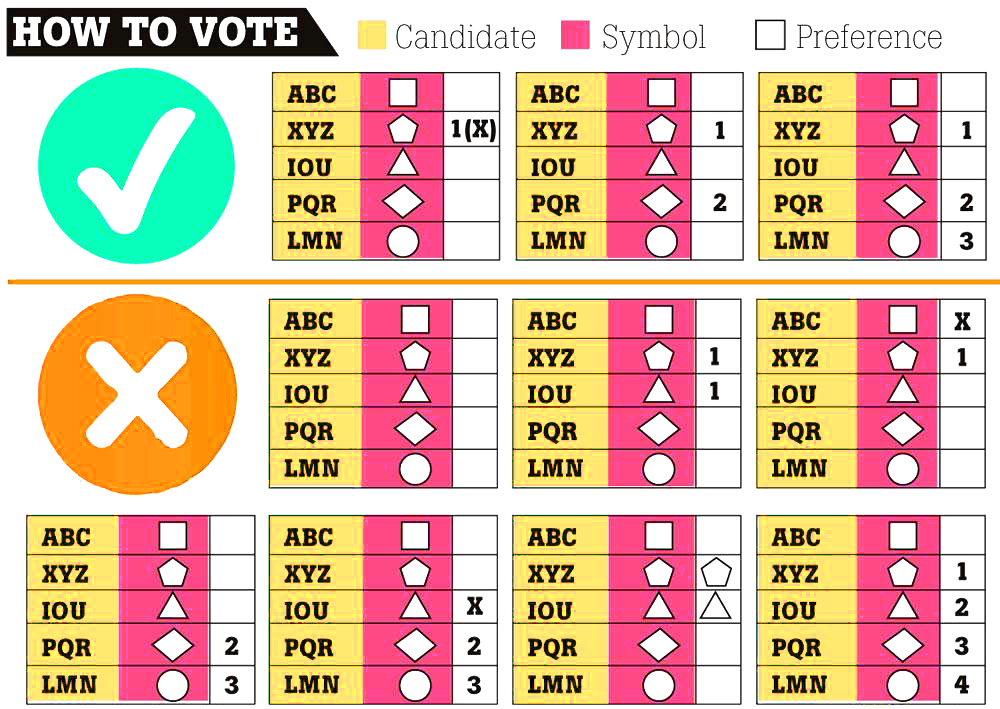
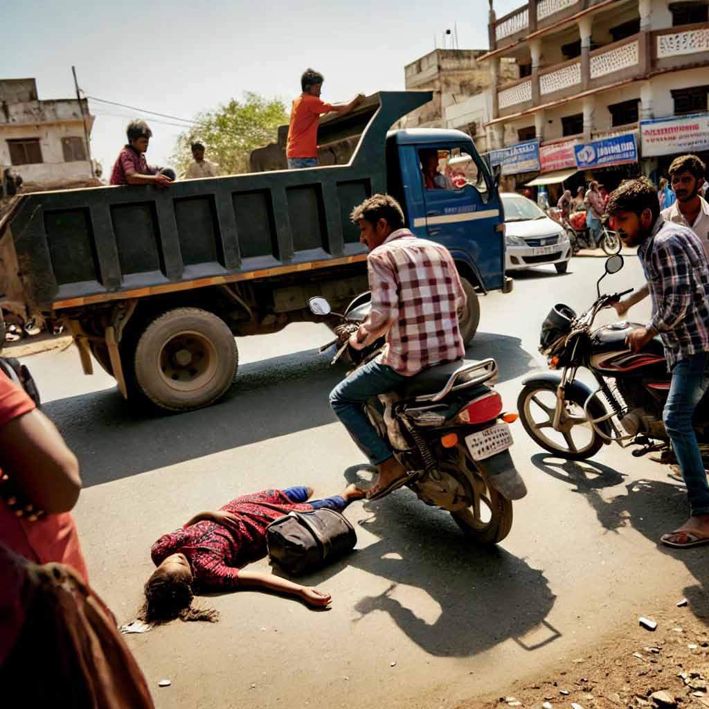

The Power of Second Preference in the 2024 Election
The Power of Second Preference in the 2024 Election
Jaffna Monitor hellojaffnamonitor@gmail.com 44 F or the first time in Sri Lanka's history of presidential elections, there is a strong possibility of the need to count second and third preferences of the votes cast in favour of the candidates, barring the top two who get the first count at the 9th presidential election slated for September 21, 2024. Although there are 38 candidates in the fray, most independent observers are of the view that the election will be a 4-cornered contest among the leading candidates, President Ranil Wickremesinghe, who stands as an independent candidate, Sajith Premadasa of Samagi Jana Balawegaya (SJB), Anura Kumara Dissanayake of Jathika Jana Balawegaya (JJB) and Namal Rajapaksa of Sri Lanka Podujana Peramuna (SLPP). Wickremesinghe got a massive boost when 92 MPs, the vast majority of them SLPPers, extended support to the United National Party (UNP) leader, who is contesting as an independent candidate. This came immediately after the decision taken by Rajapaksas to field young Namal. Even Wimal Weerawansa, most vociferous opponent of Wickremesinghe, grudgingly acknowledged, "Ranil, who was at the bottom has suddenly rose in the list of candidates". Wickremesinghe's advantage is that he brought the economy back on the rails and ended the shortage of essential items. According to exit polls, none of the candidates will get a clear 50% + one want, which is The Power of Second Preference in the 2024 Election Ensuring Your Vote Counts: BY: Sugeeswara Senadhira Tamil/Muslim communities could use second preference to eliminate unpredictability. Special Article
Jaffna Monitor hellojaffnamonitor@gmail.com 45 required to score an outright victory in the first count. This did not happen in the first eight presidential elections from 1982 to 2019, as there were only two leading candidates at each election and one of them crossed the bar. Hence, there was no requirement to count the second and third preferential votes to decide a winner. However, this time, the scenario is different. Most exit polls and opinion polls predict less than 40% of the votes for the leading candidate, with 15% to 30% for each of the other main contenders. Most analysts agree that there is no clear-cut winner, and the race for the presidency is turning into a multiple- horse race. In a scenario where none of the candidates secure more than 50% of the votes, the significance of the second preference becomes paramount. While Sri Lankan voters eagerly Ranil Wickremesinghe Sajith Premadasa Anura Kumara Dissanayake Namal Rajapaksa

Jaffna Monitor hellojaffnamonitor@gmail.com 46 anticipate the opportunity to exercise their democratic rights this year—after two other elections, for provincial councils and local government, were postponed due to legal, economic, or other unspecified reasons—the average voter is not accustomed to recording second or third preferences in a presidential election. The candidate who polls more than 50% of the votes is declared the winner. If no candidate secures more than 50%, the second-choice votes of voters will be counted. In this case, the votes cast for the losing candidates, except for the top two, will be reallocated based on the second and third preferences. These preferences will be added to the vote totals of the first two candidates to determine the final winner. In a recent media interview, former Election Commission Chairman Mahinda Deshapriya explained the process in simple terms. If there are five candidates—A, B, C, D, and E—with a total of 100 valid votes, let's assume A receives 40, B gets 35, C has 15, D polls six, and E gets four. After the first count is completed, the contest is between A and B, as they are the top two candidates. These two are considered the remaining candidates. The second or third preferences marked on their ballot papers are no longer considered in the second round because they are now the only candidates left, while the others are eliminated from the contest. Then, the counting of the ballot papers marked for C will take place first. In case, a voter has marked his first preference to C and second to A or B, it will be considered as a vote for A or B. Then, this ballot paper is inserted into the ballot box meant for A or B. The third preference marked in this ballot paper is not considered. Also, a ballot paper marked for

Jaffna Monitor hellojaffnamonitor@gmail.com 47 C as the first choice bears second or third preferences to D or E; it will not be considered because these two are not in the contest or are eliminated candidates. Similarly, in the event of a voter marking first preference to C, second to D or E and third to A or B, it will be considered a vote to A or B as third preference. The ballot papers cast for C, D, and E are checked for second and third preferences and validly marked for A and B. If we assume that A gets three additional votes with his total moving up to 43 and if B gets ten more additional second preference votes will have a total of 45. The grand total is now 88. Out of it, B gets more than 50 percent and is declared President. If any of the two does not get additional votes after counting second and third preferences, the candidate 'A', who has the highest number in the first round itself will be declared winner. In the unlikely event of a tie, where both A and B get an equal number of votes, the Election Commission can finally resort to a raffle draw to select the winner. Voters can indicate their preferences by marking 1, 2, or 3 in front of the symbols of their chosen candidates. However, if they use an 'X' to mark their first choice, they cannot use their second and third preferences (2 and 3). To use all preferential votes, they must avoid marking an 'X.' For example, if someone marks their first choice with an 'X' and then marks their second and third choices as 2 and 3, their vote will be invalid. The second preference will help a candidate who polled at last 40 per cent in the first round because even if the second preference vote is distributed evenly among the first two, the candidate already ahead could forge ahead to be the winner. However, if someone's first preference vote hovers around 30 per cent or less, he would require bulk voting in his favour as the second preference. The voters, whether Sinhala, Tamil or Muslim, will be able to safeguard their interests by casting second preference, in addition to casting their first vote for the most favourable candidate, as it will doubly ensure that the vote will not be wasted. For example, if you have a favourite candidate in mind and, while voting for him, if you have doubts about his victory, you can cast a second preference for another candidate who has better chance than your first choice. Furthermore, if you feel that one of the first two leading candidates would not serve the interests of your community, you could cast your second preference to the other leading candidate in order to prevent the former candidate from being elected. If a voter wants to cast their first preference for a candidate from their community, but is aware that this candidate is unlikely to win due to a lack of nationwide support, they can cast their second preference for a leading candidate to ensure their vote is not wasted. By doing so, the voter can safeguard the interests of their community or religious group while still expressing their first preference among the candidates. Note: Sugeeswara P. Senadhira is an eminent media tactician and seasoned diplomat, presently serving as the Media Advisor to the Prime Minister of Sri Lanka since August 2022. With a prolific career straddling both media and international affairs, he formerly held the prestigious position of Director (Research & International Media) to the President of Sri Lanka from 2013 to 2022. His diplomatic acumen is evidenced by his tenure as Minister Counsellor in key global capitals such as New Delhi, Paris, and Oslo. A veteran journalist, he has presided over notable media institutions, including The Independent and Sirasa, MTV/ MBC, cementing his status as a stalwart in both journalism and diplomacy.
Jaffna Monitor hellojaffnamonitor@gmail.com 48 A Dying Child, A Silent Crowd: Can We Really Expect System Change? Article

Jaffna Monitor hellojaffnamonitor@gmail.com 49 O n September 10, 2024, around 3 PM, the heat of the sun was at its peak. A friend, on his way to the Medical Faculty, noticed an unusual traffic jam on Aadiyapatham Road in Kokkuvil. Since the area is home to several wedding halls, he initially thought the congestion might be due to a wedding. At that moment, someone passing by remarked, 'It's lying ahead on the road,' and the shift in the expressions of those standing around suggested that an accident might have occurred. Struggling through the crowd on his motorcycle, my friend pushed forward to see what had happened. A young girl who had been riding a bicycle was struck by a tipper and lay on the road, clinging to life. Not a single person had rushed her to the hospital; instead, they just stood there—watching. Without hesitation, my friend dropped his bag and helmet, lifted the girl into his arms, and desperately pleaded with the onlookers and passersby for help. But no one moved, no one offered a hand. They simply watched as her life slipped away. Yet, no one stepped forward to help. Finally, with the assistance of a passing motorcyclist, my friend rushed the girl to the hospital. Even as they transported her, her condition was rapidly deteriorating. Despite the best efforts of the doctors and nurses in the emergency department at Jaffna Teaching Hospital, it was too late—the girl had passed away. Her mother, unaware of the tragic news, frantically searched every bed in the hospital, desperately hoping to find her daughter alive. Witnessing this, my friend's heart shattered. Had the girl been taken to the hospital immediately after the accident, her chances of survival would have been significantly higher. But the fact that not a single onlooker stepped forward to help is deeply disturbing. It's heartbreaking to think that this young girl could have been the same age as their own daughters. Yet, with chilling indifference, they turned their vehicles away, treating her like a lifeless object—some even casually saying, 'It's lying there,' as if her life meant nothing. If it had been their own family member, would they have stood by so coldly? Those who constantly demand 'system change' fail to see that real change must begin within themselves. How can people who express outrage over the loss of life in distant places turn a blind eye to the death unfolding right in front of them? This wasn’t just a death caused by an accident—this was a murder committed by the apathy of those who stood there and watched, doing nothing. Note: Aaqil Sharaff is a medical student studying at Jaffna Medical Faculty. BY: Aaqil Sharaff